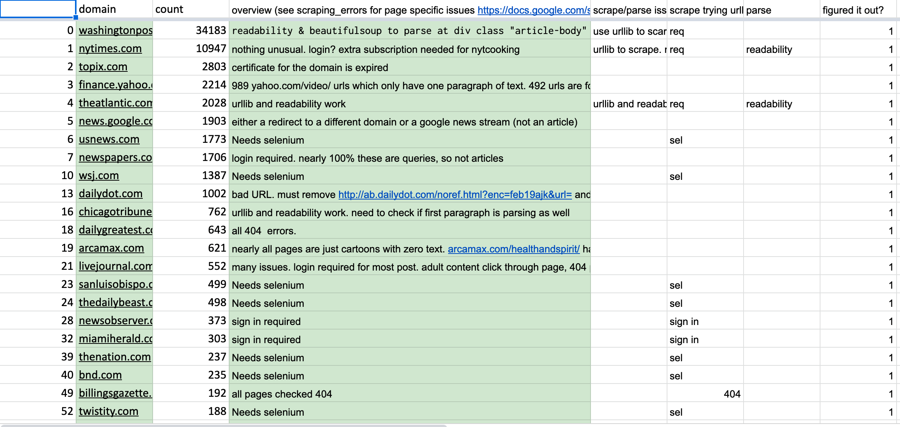

ERCEXPO: NLP Research Project
During this 7-month long apprenticeship, I was able to work alongside various PhD students on this ongoing NLP project. This project involved scraping and parsing text from various sources of online media and then classifying that text as either more conservative or liberal in nature. In my work, I worked closely on the web scraping and parsing portion of the project. The scraper itself was coded in Python and utilized a plethora of packages including BeautifulSoup (mainly), Selenium, numPy, Pandas, and more. A challenge that was faced while coding the scraper was that different domains would fail to be scraped. To fix this issue, I analyzed the HTML structure of these problematic domains and gathered the relevant information including xPaths, Selector Paths, and other extraneous elements. Using these elements, I wrote various Python scripts to tackle the problems faced by the web scraper.
In the above picture, I have compiled data related to the various domains I have scraped. The domain along with the count, the overview, and scraping/parsing related infromation is provided. For some of the domains, the Selenium web-driver needed to be used or perhaps a paywall was encountered. Thus, these errors needed to be solved.
Furthermore, this project allowed me to connect with people from all over the world including Poland and the Netherlands. This involved managing conflicting meeting times, accounting for European web domains, and finishing milestones in a timely manner. The experience I had working with these professors and PhD students was an amazing opportunity for me to get exposure to academia.